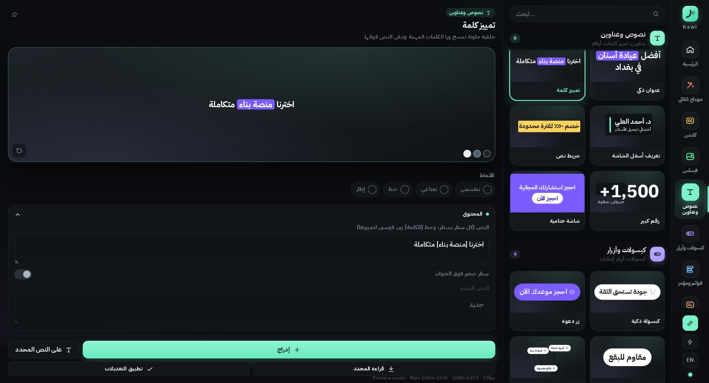

تحچي، وراوي يسوّي المونتاج.
إضافة عربية لـ After Effects و Premiere Pro تسمع الفيديو وتركّب فوقه العناوين والقوائم والكابشن والانتقالات والأصوات بضغطة وحدة. وكل عنصر يبقى طبقة وحدة تتعدل من التايم لاين.
التجربة يومين مجاناً وبيها كل الأدوات. تطلبها من داخل الإضافة بضغطة، والكود يتفعّل تلقائياً.
كل أداة طبقة بالتايم لاين
أربع أدوات بمكان واحد. كلها تشتغل على الفيديو الحقيقي، وما تقص منه ولا ثانية.
Auto Editيفرّغ الكلام ويفهمه: إذا الشخص عدّد أشياء تطلع قائمة وكل عنصر يظهر بلحظة ما ينذكر، وإذا ذكر رقم يطلع رقم كبير، والكلمات المهمة تصير زجاج أو تمييز. ويضيف عنوان بالبداية، وزووم، وانتقالات بالوقفات، ودعوة للتواصل بالنهاية، ويا أصوات لكل عنصر.
Auto Captionsتفريغ الكلام يصير على جهازك، ويفهم اللهجة العراقية. تصحح أي كلمة وتبقى التوقيتات مضبوطة، وتحط الكلمة المهمة بين [ ] حتى تطلع بلون وحركة.
Faceless Scenesمشاهد كاملة تغطي الفيديو لما ما تريد الشخص يبين: نيون، منتج واقعي، مجسّم، كولاج ورقي، ملاحظة مثبّتة، وكلمات تنط. تبدّل الصورة بصورة منتجك وتحرّكها وتكبّرها براحتك.
Libraryعناوين، تمييز كلمات، كبسولات، أزرار دعوة، قوائم ومؤشر، زجاج حقيقي يغبّش الفيديو اللي وراه، بطاقات وأرقام، إشارات مدارية، انتقالات وحركة كاميرا، ومكتبة أصوات.
راوي صار على البريمير
نفس راوي ونفس كود التفعيل. إذا مفعّل بالأفترافكت، يشتغل بالبريمير على نفس الجهاز بدون تفعيل ثاني.
نصوص متحركة، زجاج سائل ومصنفر، أيقونات، ستايل ترند، نيون وفيسلس. تضغط على العنصر وينزل بمكان المؤشر بالتايم لاين.
النص والخط والألوان والحجم والحركة بمجلدات مرتبة، وتسحب الفيديو على خلفية الزجاج حتى يتغبّش وراه.
١٢٨ انتقال بأسماء عربية وانتقالات راوي، ومنحنيات الحركة على الفريمات، وأصوات لكل عنصر.
تعاين قبل ما تدرج، وتعدّل بعده

حمّل راوي وثبّته بنفسك
التحميل مجاني. الإضافة تشتغل بعد ما تفعّلها بكود تجربة أو كود النسخة الكاملة.
راوي لـ After Effects و Premiere Pro
Windows protected your PC اضغط More info وبعدها Run anyway. تطلع لأن الملف جديد ومو موقّع بعد، وهو آمن.- سكّر After Effects و Premiere Pro وافتح الملف اللي حمّلته، وبداخله دبل كلك على Rawi-Setup.exe.
- افتح After Effects أو Premiere Pro ومن القائمة Window › Extensions › Rawi
- اضغط «اطلب تجربة يومين» بشاشة التفعيل، والتجربة تتفعّل خلال ثواني.
- للنسخة الكاملة: اشترِ من المتجر، وبعدها اضغط «دفعت؟ فعّل النسخة الكاملة» واكتب رقم الطلب.
شوف طريقة التثبيت
فيديو قصير خطوة بخطوة: من التحميل لحد ما تتفعّل التجربة.
شلون تحصل راوي
كل نسخة ترتبط بجهاز واحد. كلشي يصير من داخل الإضافة، وما تحتاج تراسل أحد.
حمّل ملف التثبيت من هذي الصفحة وثبّته، وافتح راوي من After Effects أو Premiere Pro.
من شاشة التفعيل اضغط «اطلب تجربة يومين»، والتجربة تتفعّل خلال ثواني. التجربة مرة وحدة لكل جهاز.
K7Q2M-9XA4Pادفع من متجر راوي، وبعدها بنفس الشاشة اضغط «دفعت؟ فعّل النسخة الكاملة» واكتب رقم الطلب. تتفعّل خلال دقايق بدون ما تراسل أحد.
شهري، سنوي، أو مدى الحياة
- زجاج أبل السائل (Liquid Glass)
- خطوط وزوايا متوهجة للنصوص والصور
- Rawi Glow: توهج ضوئي خفيف على أي طبقة بضغطة
- زجاج سائل ويا صورة: دائرة أو مربع، فوق أو تحت أو على الجوانب
- كابشن بكتلة مربعة وستايلات ناعمة بدون قفزات
- المونتاج التلقائي
- الكابشن العربي بـ ٧ ستايلات
- ٦ مشاهد فيسلس
- ٢٢ مكوّن موشن و١٩ صوت
أسئلة تتكرر
من وين أحمّل الإضافة؟
من زر «تحميل لويندوز» بهذي الصفحة. التحميل مجاني، وبعد التثبيت تطلب التجربة أو تفعّل النسخة الكاملة من داخل الإضافة.
على شنو يشتغل؟
على After Effects (2022 أو أحدث) و Premiere Pro (2025 أو أحدث)، بالويندوز والماك. كل الأدوات تشتغل على الاثنين، ومنها الكابشن التلقائي.
شلون أحدّث راوي على الماك؟
سكّر After Effects و Premiere Pro، وانسخ سطر التحديث من صفحة التحميل والصقه بالـ Terminal. ينزّل بس الملفات اللي تغيّرت ويثبّتها مكان القديمة، والتفعيل يبقى. على الويندوز: حمّل ملف التثبيت الجديد وثبّته فوق القديم.
أحتاج كود ثاني للبريمير؟
لا. نفس كود راوي يشغّل الأفترافكت والبريمير على نفس الجهاز. وإذا عندك راوي من قبل، البريمير يجيك ويا التحديث بدون ما تدفع شي.
الكابشن يحتاج نت؟
التفريغ يصير على جهازك. محرك التفريغ يتحمّل مرة وحدة أول ما تستخدم الكابشن، وبعدها يشتغل بدون نت.
الكود يشتغل على كم جهاز؟
كل كود لجهاز واحد، ويرتبط برقم الجهاز اللي يطلع بشاشة التفعيل. إذا تحتاج جهاز ثاني راسلنا بالتليغرام.
شنو بيها التجربة؟
كل الأدوات بدون استثناء لمدة يومين، ومرة وحدة لكل جهاز. بعد ما تخلص تگدر تشتري النسخة الكاملة وتفعّلها بنفس الشاشة.
المونتاج التلقائي يقص الفيديو؟
لا. يضيف العناصر فوق الفيديو بس، والمقطع الأصلي يبقى مثل ما هو. وكل المونتاج ينشال بـ Ctrl+Z وحدة.
شلون أدفع؟
من متجر راوي بالدفع الإلكتروني: اختار شهري (15,000 د.ع)، سنوي (35,000 د.ع) أو مدى الحياة (75,000 د.ع). بعد الدفع افتح راوي واضغط «دفعت؟ فعّل النسخة الكاملة» واكتب رقم الطلب أو رقم الهاتف اللي دفعت بيه، وتتفعّل النسخة الكاملة خلال دقايق.
شنو يصير من يخلص الاشتراك؟
راوي يرجع لشاشة التفعيل. تجدد من المتجر وتفعّل بنفس الطريقة: «دفعت؟ فعّل النسخة الكاملة» ورقم الطلب الجديد.
تحتاج مساعدة؟
التجربة والشراء والتفعيل كلها تصير من داخل راوي: اطلب تجربة يومين من شاشة التفعيل، أو اشترِ من المتجر واضغط «دفعت؟ فعّل النسخة الكاملة»، والكود يتفعّل لحاله. إذا واجهتك مشكلة أو عندك سؤال، راسلنا بالتليغرام.